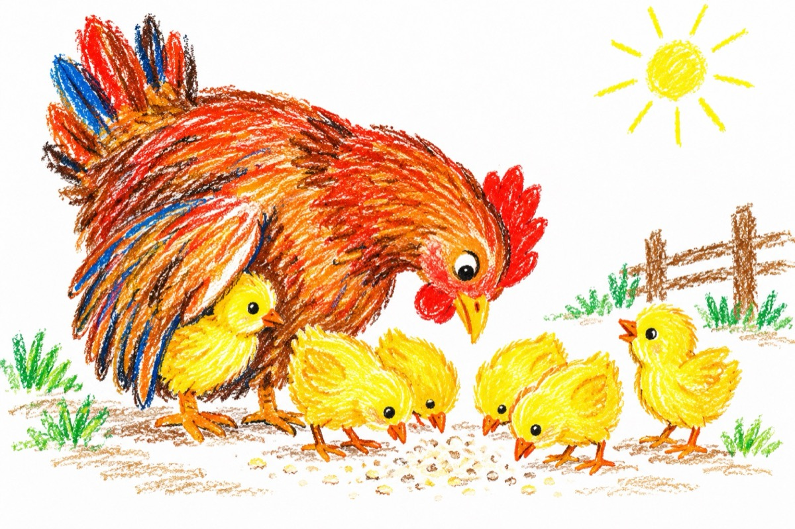

Dac-ai ști
Știi, tu, cât trăiește-o rață
Un cocoș sau o găină?
Cum o cloșcă puii-și crește și-i învață
Să mănânce-o musculiță
Sau o mână de făină?
Știi, tu, cât îi dădăcește
Cum îi apără și-i poartă
De vreun pui se rătăcește
Cu oricine ea se luptă
Poate chiar cu o armată!
Știi, tu, nebună și hoață
Câte cântece și șoapte
Se petrec în coștereață
Fie zi sau fie noapte?
Știi, tu?
Ce înseamnă-un cucurig,
Apărut în crucea nopții
Când cuvintele se sting -
Se ridică-n culmea bolții?
Și mai știi ce tristă pare,
Lumea toată din ogradă
Când acest cântat dispare,
Sugrumat de-o răpitoare?
---------------------------------
„Nu ai vrut nici sfat, nici rugă!”
Spuse-un pui rămas orfan
Acum vulpe-o stai în cușcă
Și mestecă leuștean!
Vasile Groza